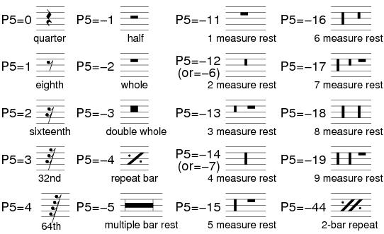
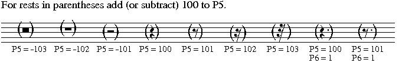
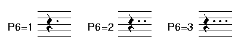
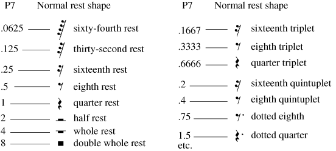
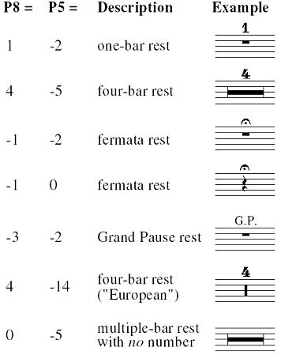
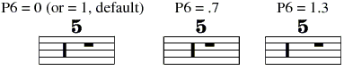
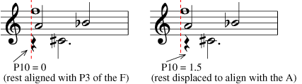

Code 2 -- Rests -- parameter structure |
P1 code number (2)
P2
staff number
P3
horizontal position
P4
vertical position
P5 rest type
P7
P8
fermata or number over rest
P9
P10
P11 height of number or fermata over rest
P12
P13
P14
P15
P16
move number left/right
P17
move rest to staff above/below
P20
P25
P26
Jump to Letter Edit Commands
Jump to Function Key Setup
To input a single rest, type REST or click on the
New Item button and then on one of the REST buttons. A rest will appear on the highest staff currently on the screen. If there is no staff on the screen, the rest will appear in a position relative to staff 1.
REST may be followed by a series of numbers (n2, n3... ) which will further specify its characteristics by setting P2, P3, etc. E.g.
REST 8 20 will appear on staff 8 at horizontal position 20.
RESTS = sixteenth rest.
RESTE = eighth rest.
RESTQ (or REST) = quarter rest.
RESTH = half rest.
RESTW = whole rest.
When the rest appears, it is directly in edit mode and may be moved, etc. with the various edit commands. Hitting <enter> or
<esc> or X leaves edit mode.
For grace note size rests (mini-rests) add 100 to P4 (or -100 if P4 is negative.)
P5 indicates the type of rest.

When P5 = -5, P9 sets the right end position.

P6
indicates the number of augmentation dots with the rest.
If P6 = -1 the rest will be invisible. This is useful when more than
one line of music is on the same staff. The rhythmic value in P7
determines the horizontal space required for the rest.
The rest will
appear on the display in light gray, but will be invisible when
printing. Click here for information regarding input of invisible
rests
(RI).
If P6 is greater than 4, a horizontal line will appear with the rest.
This line may be used for visual centering of rests. (The line
will NOT appear on the printed page.) The length of the line
equals the value of P6.
P7 holds rhythmic time value (ALWAYS needed for automatic
spacing systems). For a normal quarter rest P7=1; for an eighth,
P7=.5; for a half, P7=2; for a whole rest, P7=4 (i.e. 4 times as long as
a quarter rest). However, since a whole rest is often used to indicate
a full measure of rest, the time value should then usually be indicative
of how many beats are involved. e.g. in 3/4 time a whole rest might
have the value of 3; in 9/8 time the value might be 4.5 (i.e. 9 eighth
notes.) An eighth note triplet = .3333, or 1/3 of the time of a quarter, etc..
These may be thought of as real-time values in seconds, where

P7 = -1 = ignore rest when justifying or lining up.
P8 indicates a number (or fermata) that will appear over the rest.
This is usually used when P5 = -2 or less (multiple bar rests).
For a fermata, P8 = -1. -2 makes an inverted fermata below the rest.

When P5 = -5, P9 sets the right end position.
P6 can change the spacing of a composite European style rest.

P9 is used for centering rests. P9 is, by default, zero. When the CW command
(see Letter Commands, below) is invoked, SCORE calculates the correct
position for whole rests (P5 = -2), multiple-bar rests (P5 = -3 or less), and
repeat-bar signs (P5 = -4) so that they will be centered between the barlines
and then places that horizontal position value in P9. While in edit mode,
setting P9 to -1 is the same as typing CW.
P10 is used to displace the rest from its normal position (given in P3).
This is usually used for for readability in multi-voice structures.

Toolbar buttons:
 = offset .5
to left
= offset .5
to left  = offset .5 to right
= offset .5 to right  = zero offset
= zero offset
P11 sets the height of a number or fermata over a rest.
P12 sets the size of the number or fermata over a rest.
P13 sets an instrument ID# for automatic cueing during Part Extraction.
P13 may contain the instrument ID# of any staff in the same file.
The Part Extraction process will automatically insert cue notes from
the indicated line into the given measure. (See Code 8, P9 re. instrument
ID numbers.) This feature is semi-automatic; you must manually transpose
cues and/or account for any differences in clef indications.
P14 can override the default type font for numbers over rests.
The default is set in the \SCORLIB\PREF.DAT file by the 'REST' line. The
type font numbers used here follow the same rules as those for font
changes in Code 10 (numbers).
P15 sets the size of the rest. (P15 = 0 = size 1.)
P16 can move the rest number to left or right.
P17
may be used to place rest on staff above (P17 = 1) or staff below
(P17 = 2) the staff to which the rest is actually attached.
P20 can spread the digits in the number.
P25 layer number.
See Color Control.
P26 color/gray value.
See Color Control.
_________________________________________________________
----- Shortcut Letter Commands while editing
Rests --------------------------
>>> Rhythm P5, P7
RH64 = 64th rest. (P5, 7)
RH32 = 32nd rest. (P5, 7)
RHS or RH16 = makes 1/16 rest. (P5, 7).
RHE or RH8 = makes 1/8 rest. (P5, 7).
RHQ or RH4 = makes 1/4 rest. (P5, 7).
RHH or RH2 = makes 1/2 rest. (P5, 7).
RHW or RH1 = makes whole rest. (P5, 7).
RHD or RH.5 = makes double whole rest. (P5, 7).
RHG = makes grace note size rest. (P4, 5,7)
RHU (or RH5, RH10, RH20, RH40) = change rhythm to quintuplet. (P7)
e.g. P7=.5 (1/8) becomes =.4 (1/10)
TRP (or RH3, RH6, RH12, RH24, RH48) = change rhythm to triplet. (P7)
e.g. P7=.5 (1/8) becomes =.333 (1/12)
TRP and RHU are ignored if original rhythm is not
a basic duple value. (1/2, 1/4, 1/8, etc.) In such a
case use letters such as RH12, RH20, etc..
>>> Dots P6
DOT = adds dot to rest - changes P7,6.
DDT = make double dot. (P7, 6)
SPD = space dot to right
SPD- = space dot to left
>>> Offsets P10
OFL = offset one note width to the left (P10=20)
OFR = offset one note width to the right (P10=10)
OFM = offset minus, moves rest .5 step to left. (P10)
OFP = offset plus, moves rest .5 step to right.
NOF = no offset of rest - P10 = 0.
>>> Other commands
CUE = make rest cue size. (P4 + 100)
CUX = normal size rest. (P4 < 100)
CN = center on the nearest note or rest.
If a number follows CN, the rest will center on the nearest
note or rest on that staff.
RF = add fermata. P8 = -1.
RF- = add inverted fermata below rest. P8 = -2.
Repeating RF or RF- deletes fermata.
RI = makes rest invisible/visible P6 = -1/0.
RP = repeat bar (./.) P5 = -4.
WBn = whole rest with number n above.
EUn = European style whole bar composite rest with number n.
CW = centers whole rest in bar. (P3 = position of rest for lineup,
P9 = actual printed position.)
CWn (when NOT in edit mode) = center all whole rests on
staff n. CWA will center whole rests on ALL staves.
| F1 Help |
F2 Back to Previous Item |
F3 Forward to Next Item |
F4 Back to Previous Item, Same Code # |
F5 Forward to Next Item, Same Code # |
F6 . . . |
| F7 . . . |
F8 Center |
F9 Exit from Edit Mode ( X ) |
F10 . . . |
F11 Delete, Move to Previous, Same Code # |
F12 Delete, Move to Next, Same Code # |